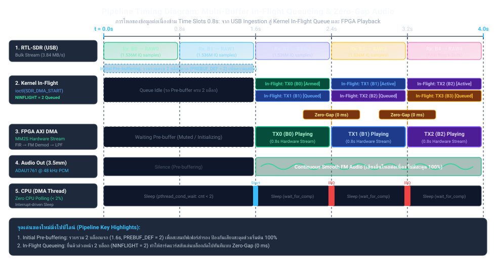

PYNQ-Z2 FM SDR Receiver: วิทยุ FM Real-time Audio ด้วย FPGA + RTL-SDR + Linux Framebuffer
1 Overview
สืบเนื่องจากบทความก่อนหน้านี้ที่ผมได้ทดลองใช้งานบอร์ด PYNQ-Z2 ใน 2 ส่วน:
- FM Demodulation บน PYNQ-Z2 — การประมวลผลถอดรหัสสัญญาณวิทยุ FM บน FPGA
- Linux Framebuffer / DRM Display บน PYNQ-Z2 — output ภาพกราฟิกออกพอร์ต HDMI ผ่าน Linux Framebuffer
จึงเกิดไอเดียขึ้นมาว่า: บนบอร์ด PYNQ-Z2 นั้นมีชิป Audio Codec (ADAU1761) พร้อมช่องต่อหูฟัง 3.5 mm ในตัวอยู่แล้ว หากเรานำสัญญาณ RF ดิบที่รับจาก USB RTL-SDR Dongle ส่งผ่าน DMA เข้าไปให้ FPGA (PL) ทำการ FM Demodulate แล้วยิงสตรีมเสียงออกพอร์ตหูฟังตรงๆ พร้อมทั้งให้ CPU วาดหน้าจอ GUI แสดง Spectrum Analyzer และ Waterfall Display ออกพอร์ต HDMI ก็จะกลายเป็นเครื่องรับวิทยุ FM SDR Receiver ได้เหมือนกัน ว่าแล้วก็ลองเลยละกัน
1.1 สถาปัตยกรรมโดยรวม (System Architecture)
โครงสร้างการทำงานในภาพรวม (Concept) สามารถแบ่งหน้าที่ระหว่างฝั่ง Processing System (PS/Linux) และ Programmable Logic (PL/FPGA) ได้ดังแผนภาพนี้:
flowchart TD
RTL["USB RTL-SDR"]
APP["Linux Userspace
Native C SDR Application"]
subgraph PS["Processing System (PS)"]
CTRL["RTL-SDR Control
Frequency / Gain / Sample Rate"]
GUI["SDR GUI
Spectrum / Waterfall"]
REC["Recording Control
WAV File"]
end
subgraph DDR["DDR3 Memory"]
IQ["I/Q Buffer (CMA)"]
AUDIO["Audio Buffer"]
FB["HDMI Framebuffer"]
end
subgraph PL["Programmable Logic (PL)"]
DMA_TX["AXI DMA MM2S"]
DSP["FM DSP Pipeline
FIR Decimation
FM Demodulation
Audio LPF"]
SPLIT["AXI4-Stream Broadcaster"]
PLAY["Audio Playback
FIFO → I2S → ADAU1761"]
DMA_RX["AXI DMA S2MM
Audio Recording"]
DMA_TX --> DSP
DSP --> SPLIT
SPLIT --> PLAY
SPLIT --> DMA_RX
end
subgraph VIDEO["HDMI Display"]
VDMA["AXI VDMA"]
HDMI["HDMI Output"]
VDMA --> HDMI
end
RTL --> APP
APP --> CTRL
CTRL --> IQ
IQ --> DMA_TX
DMA_RX --> AUDIO
AUDIO --> REC
APP --> GUI
GUI --> FB
FB --> VDMA
APP -.->|"AXI-Lite Control"| PL
1.2 รายละเอียดเส้นทางข้อมูลและการควบคุม (Data & Control Flow)
ในโปรเจกต์เดิม FM Demodulation บน PYNQ-Z2 สัญญาณเสียงที่ถอดรหัสเสร็จจะถูกส่งกลับเข้าหน่วยความจำ DDR ผ่าน DMA เพื่อให้ CPU อ่านไปเล่นเสียง (ผ่าน jupyter notebook) แต่ในโปรเจกต์นี้ผมได้ทำการเพิ่ม เส้นทางสัญญาณ (Tap ออกมา) ให้สตรีมเสียงส่งตรงเข้าสู่ Audio Codec Controller ในระดับฮาร์ดแวร์ทันที เพื่อให้ได้ยินเสียงแบบ Real-time เลย
flowchart TD
%% =================================
%% 1. RTL-SDR INPUT
%% =================================
subgraph USB["1. RTL-SDR Input"]
RTL["USB RTL-SDR Dongle"]
USBDRV["USB Driver / librtlsdr"]
end
%% =================================
%% 2. LINUX USERSPACE
%% =================================
subgraph PS["2. Linux Userspace - Native C Application"]
APP["PYNQ SDR Application (fm_sdr)"]
RTLCTRL["RTL-SDR Control
Frequency / Gain / Sample Rate"]
GUI["SDR GUI
Spectrum / Waterfall / Scan"]
RECCTRL["Recording Control
Start / Stop / WAV"]
APP --> RTLCTRL
APP --> GUI
APP --> RECCTRL
end
%% =================================
%% 3. DDR MEMORY
%% =================================
subgraph MEM["3. DDR3 Memory"]
IQBUF[("TX CMA Ring Buffer
4 Buffers (0.8s each)")]
REC_BUF[("RX CMA Buffer
Audio Recording")]
FB[("HDMI Framebuffer
/dev/fb0 (1024x540)")]
end
%% =================================
%% 4. FPGA PL
%% =================================
subgraph PL["4. FPGA Programmable Logic"]
%% FM DSP
subgraph DSP["FM DSP Pipeline"]
DMA_TX["AXI DMA MM2S"]
AXIS_IN["AXI4-Stream FIFO"]
FIR_I["FIR Decimation I"]
FIR_Q["FIR Decimation Q"]
DEMOD["Quadrature FM Demod"]
LPF1["Audio LPF 1"]
LPF2["Audio LPF 2
48 kHz / 16-bit PCM"]
DMA_TX --> AXIS_IN
AXIS_IN --> FIR_I
AXIS_IN --> FIR_Q
FIR_I --> DEMOD
FIR_Q --> DEMOD
DEMOD --> LPF1
LPF1 --> LPF2
end
%% AXI4-Stream Broadcaster
BROADCAST["AXI4-Stream Broadcaster
1 Input / 2 Outputs"]
%% Audio Playback
subgraph PLAY["Audio Playback - Modified PYNQ Base IP
audio_codec_ctrl_v1.0"]
direction TB
AXIL["AXI4-Lite Slave
Codec Control / Tone Select (0x20)"]
AXIS_AUDIO["AXI4-Stream Slave
16-bit PCM Mono Input"]
AUDIO_FIFO[("Audio FIFO
256 x 16-bit")]
I2S["I2S Transmitter
48 kHz / 24-bit Dual-Mono"]
CODEC["ADAU1761 Codec"]
HP["Headphone Jack"]
AXIS_AUDIO --> AUDIO_FIFO
AUDIO_FIFO --> I2S
I2S --> CODEC
CODEC --> HP
end
%% Audio Recording
subgraph RECORD["Audio Recording (Optional)"]
REC_FIFO["Recording FIFO"]
DMA_RX["AXI DMA S2MM"]
REC_FIFO --> DMA_RX
end
%% Hardware Control
subgraph HWCTRL["Hardware Clock / Reset"]
AUDCLK["Audio Clock (12.288 MHz / 100 MHz)"]
end
%% DSP output split
LPF2 --> BROADCAST
BROADCAST -->|"M01_AXIS - Playback"| AXIS_AUDIO
BROADCAST -->|"M00_AXIS - Recording"| REC_FIFO
%% Audio IP control and clock
AUDCLK -.-> I2S
end
%% =================================
%% 5. HDMI VIDEO
%% =================================
subgraph VIDEO["5. HDMI Display Pipeline"]
VDMA["AXI VDMA"]
VOUT["Video Out / rgb2dvi"]
HDMI["HDMI Output"]
VDMA --> VOUT
VOUT --> HDMI
end
%% =================================
%% DATA FLOW
%% =================================
RTL --> USBDRV
USBDRV --> RTLCTRL
RTLCTRL -->|"Raw IQ (XOR 0x80)"| IQBUF
IQBUF -->|"DDR to PL (MM2S)"| DMA_TX
DMA_RX -->|"PL to DDR (S2MM)"| REC_BUF
REC_BUF -->|"Audio WAV"| RECCTRL
GUI -->|"Direct Blit"| FB
FB --> VDMA
%% =================================
%% CONTROL FLOW
%% =================================
APP -.->|"UIO (/dev/uioX)"| AXIL
APP -.->|"PS I2C (0x3B)"| CODEC
%% =================================
%% STYLES
%% =================================
classDef data stroke:#e8590c,stroke-width:2px;
classDef control stroke:#64748b,stroke-width:1px,stroke-dasharray:5 5;
class RTL,USBDRV,IQBUF,DMA_TX,AXIS_IN,FIR_I,FIR_Q,DEMOD,LPF1,LPF2,BROADCAST,AXIS_AUDIO,AUDIO_FIFO,I2S,CODEC,HP,REC_FIFO,DMA_RX,REC_BUF,FB,VDMA,VOUT,HDMI data;
class AXIL,AUDCLK control;
2 ดัดแปลง Hardware IP (FPGA PL)
2.1 ปัญหาของ Audio Codec Controller IP เดิม
ในการส่งข้อมูลเสียงออกทางชิป ADAU1761 บอร์ด PYNQ ปกติจะมี IP สำเร็จรูปชื่อ audio_codec_ctrl_v1.0 มาให้ แต่เมื่อไปดูโครงสร้างของ IP ตัวนี้ พบว่า การส่งข้อมูลเสียงต้องทำผ่าน AXI4-Lite Register โดยให้ CPU เป็นผู้เขียนข้อมูลทีละ Sample (0x08 DataTx_L, 0x0C DataTx_R) ซึ่งมีไม่ตอบโจทย์กับสิ่งที่กำลังจะทำเพราะ:
- กินพลังประมวลผลของ CPU (High CPU Overhead): การให้ ARM Cortex-A9 คอยเขียนข้อมูลเสียงที่อัตรา 48 kHz สม่ำเสมอ จะแย่งเวลา CPU ที่ต้องใช้ในการอ่านสตรีม USB จาก RTL-SDR, ทำ FFT คำนวณ Spectrum และวาด GUI หน้าจอ Framebuffer ที่ 60 fps
- เกิดปัญหาเสียงสะดุด (Audio Underrun): หาก CPU ทำงานอื่นโหลดหนัก ข้อมูลเสียงจะป้อนไม่ทันจนเสียงขาดหาย
ทางออกที่ดีกว่า:
เนื่องจากชุดประมวลผล FM Demodulator ใน FPGA สร้างสัญญาณเสียง 48 kHz ออกมาเป็น AXI4-Stream อยู่แล้ว ผมเลยดัดแปลง audio_codec_ctrl_v1.0 ให้มีพอร์ต AXI4-Stream Slave (S_AXIS) เพื่อรับข้อมูลเสียงจาก Output ของ FM demodulator เข้า audio codec โดยตรงเลย (CPU ไม่ต้องมายุ่งอะไรกับ codec เลย)
flowchart TD
DEMOD["FM Demodulator Pipeline"]
BC["AXIS Broadcaster"]
CODEC["Modified audio_codec_ctrl
(AXIS to I2S)"]
ADAU["ADAU1761 DAC"]
HP["Headphone Out (3.5 mm)"]
DMA_RX["AXI DMA S2MM"]
DDR["DDR Memory
(สำหรับบันทึกเสียง WAV)"]
DEMOD -->|"AXI4-Stream 16-bit Mono @ 48 kHz"| BC
BC -->|"M01_AXIS"| CODEC
CODEC -->|"I2S"| ADAU
ADAU --> HP
BC -->|"M00_AXIS"| DMA_RX
DMA_RX --> DDR
style DEMOD fill:#fef3c7,stroke:#d97706,stroke-width:1.5px
style BC fill:#e0f2fe,stroke:#0284c7,stroke-width:1.5px
style CODEC fill:#dcfce7,stroke:#16a34a,stroke-width:1.5px
style ADAU fill:#ede9fe,stroke:#7c3aed,stroke-width:1.5px
style HP fill:#fce7f3,stroke:#db2777,stroke-width:1.5px
style DMA_RX fill:#f1f5f9,stroke:#64748b,stroke-width:1.5px
style DDR fill:#f1f5f9,stroke:#64748b,stroke-width:1.5px
2.2 การดัดแปลง Modified audio_codec_ctrl_v1.0
สิ่งที่แก้ไขเพิ่มเติมเข้าไปใน IP audio_codec_ctrl_v1.0 (ไฟล์ user_logic.vhd):
-
เพิ่มพอร์ต AXI4-Stream Slave:
S_AXIS_TDATA : in STD_LOGIC_VECTOR(15 downto 0); S_AXIS_TVALID : in STD_LOGIC; S_AXIS_TREADY : out STD_LOGIC; -
ใส่ Audio FIFO:
รองรับการเขียนข้อมูลแบบ Burst จาก AXI-Stream และถูกอ่านออกทีละ Sample ตามสัญญาณ Pulse 48 kHz ของ I2S -
การแปลงข้อมูล 16-bit ไปเป็น 24-bit (I2S Format):
เนื่องจาก ADAU1761 ตั้งค่าให้รับสัญญาณ I2S แบบ 24-bit แต่ FM demodulator ออก 16 bit เราจึงนำ Sample เสียง 16-bit จาก FIFO มาต่อท้ายด้วย 0 จำนวน 8 บิต (Zero-padding LSB):-- Duplicate Mono เป็น Dual-Mono (L = R) พร้อมแปลง 16-bit เป็น 24-bit DataTx_L <= x"00" & rd_data & x"00"; DataTx_R <= x"00" & rd_data & x"00"; -
คง AXI4-Lite Slave ไว้สำหรับ Control & Debug:
ยังคง AXI-Lite เอาไว้เพื่อให้ CPU สั่งงานได้ และโดยผมได้เพิ่ม Register เพื่อทดสอบ output เสียงไปที่ address 0x20 โดย- เขียน
1: ให้วงจรสลับไปขับสัญญาณคลื่นรูปไซน์ทดสอบ 440 Hz (Built-in Sine Tone Generator) สำหรับเทสระบบเสียง - เขียน
0: สลับกลับมารับเสียงจริงจาก AXI4-Stream ของ FM Demodulator
- เขียน
flowchart TD
%% =================================
%% AXI INTERFACES
%% =================================
subgraph IFACE["Audio Playback IP - AXI Interfaces"]
AXIL["AXI4-Lite Slave
Config / Tone Register (0x20)"]
AXIS["AXI4-Stream Slave
TDATA[15:0] - Mono PCM @ 48 kHz"]
end
%% =================================
%% AUDIO DATA PATH
%% =================================
subgraph PLAYBACK["Audio Playback - Modified audio_codec_ctrl_v1.0"]
FIFO[("Audio FIFO
256 x 16-bit Mono Samples")]
READ["FIFO Read Controller
48 kHz Trigger"]
UNDERFLOW["Underflow Protection
Output Zero / Mute เมื่อ FIFO ว่าง"]
DUP["Mono to Dual-Mono
Left = Right"]
CONV["PCM Format Converter
16-bit to 24-bit
(Append 8'b0 to LSB)"]
PACK["I2S Serializer / Formatter
BCLK = 3.125 MHz, LRCLK = 48.8 kHz"]
TONE_MUX{"MUX
Reg 0x20"}
SINE["Hardware 440 Hz
Sine Generator"]
AXIS --> FIFO
FIFO --> READ
READ --> DUP
DUP --> CONV
CONV --> TONE_MUX
SINE --> TONE_MUX
TONE_MUX --> PACK
FIFO -.-> UNDERFLOW
UNDERFLOW -.-> PACK
AXIL -.-> TONE_MUX
end
%% =================================
%% AUDIO CODEC
%% =================================
subgraph CODEC["PYNQ-Z2 Audio Codec"]
ADAU["ADAU1761
24-bit Audio DAC"]
HP["Headphone Jack 3.5 mm"]
ADAU --> HP
end
%% =================================
%% PS CODEC CONFIGURATION
%% =================================
subgraph PSCTRL["Codec Configuration (PS I2C)"]
PS["Zynq Processing System"]
I2C["PS I2C0 Controller (/dev/i2c-0)"]
PS --> I2C
end
I2C -.->|"I2C Config (Address 0x3B)
PLL, Audio Path, DAC Volume"| ADAU
PACK -->|"I2S Signals (BCLK, LRCLK, SDATA)"| ADAU
2.3 สรุปภาพรวมเส้นทางการไหลของข้อมูล (End-to-End Dataflow)
เส้นทางการไหลของข้อมูล (Dataflow) จาก RTL-SDR ไปจนถึงเสียงออกพอร์ตหูฟังและบันทึกลงหน่วยความจำ สามารถสรุปเป็นขั้นตอนและแผนภาพได้ดังนี้:
flowchart TD
A["RTL-SDR USB Dongle
I/Q Data"]
B["RTL-SDR Read
(CPU / libusb)"]
C["Copy I/Q to DDR
RAW Ring Buffer"]
D["DMA Driver
Submit RX + TX"]
E["AXI DMA MM2S
DDR → FPGA"]
F["FPGA FM Processing
FIR → FM Demod → LPF"]
G["FPGA Audio Stream"]
H["Audio Codec
ADAU1761"]
I["AXI DMA S2MM
FPGA → DDR"]
J["DDR RX Buffer
PCM Data"]
A --> B --> C --> D --> E --> F --> G
G --> H
G --> I --> J
จากแผนภาพข้างต้น การทำงานจะแบ่งออกเป็น 4 ขั้นตอนหลัก:
- การรับข้อมูลคลื่นวิทยุ (RF Ingestion): RTL-SDR รับสัญญาณ RF แล้วแปลงเป็นข้อมูลดิบ I/Q ส่งผ่าน USB สู่ CPU โดยใช้
libusbเพื่อคัดลอกลงใน RAW Ring Buffer บน DDR - การส่งเข้าฮาร์ดแวร์ (DMA Transfer): ไดรเวอร์
sdr_dmaทำการส่งคิว DMA สั่งให้โมดูล AXI DMA MM2S ดึงข้อมูล I/Q จาก DDR โยนให้ไปที่ FPGA (PL) - การประมวลผลบนฮาร์ดแวร์ (FPGA DSP Pipeline): วงจรดิจิทัลใน FPGA ทำการลด Sampling Rate (FIR Decimation), ถอดรหัสคลื่นวิทยุ FM (Quadrature FM Demodulator) และกรองเสียง (Audio LPF) ได้ออกมาเป็นสตรีมเสียง 48 kHz 16-bit Mono
- การส่งสัญญาณเสียงออก 2 ทาง (Dual Audio Output Paths):
- ออกหูฟังทันที (Real-time Playback): สตรีมเสียงถูกส่งตรงเข้า
audio_codec_ctrlแปลงเป็นสัญญาณ I2S เข้าชิป ADAU1761 ออกพอร์ต 3.5 mm โดยตรง โดยไม่ใช้ CPU เลย - บันทึกเสียงลงหน่วยความจำ (Recording): ส่งผ่าน AXI DMA S2MM กลับเข้าสู่ DDR RX Buffer สำหรับนำไปบันทึกเป็นไฟล์เสียง WAV เมื่อต้องการ
- ออกหูฟังทันที (Real-time Playback): สตรีมเสียงถูกส่งตรงเข้า
3 Linux Kernel, Driver และ PetaLinux Build
ในส่วน driver ของ dma ที่เพิ่มเข้า ผมได้ให้ AI ช่วยสร้างขึ้นมาให้ โดยให้พัฒนาไดรเวอร์ต่อยอดจาก Xilinx DMA Engine อีกที
3.1 ไดรเวอร์ sdr_dma
สัญญาณ I/Q จาก USB RTL-SDR สตรีมเข้ามาที่ Sample Rate 1.92 MSPS (3.84 MB/s) การส่งข้อมูลเข้าสู่ FPGA จะใช้ DMA ควบคุมโดย Kernel Driver แบบ Platform Driver ชื่อ sdr_dma (/dev/sdr_dma) ซึ่งพัฒนาครอบ Xilinx DMA Engine ไว้อีกที โดยมีกลไกสำคัญดังนี้:
- CMA Allocation (
dma_alloc_coherent): จองหน่วยความจำแบบต่อเนื่อง (Physically Contiguous) ใน DDR ไว้ล่วงหน้า - Multi-Buffer Ring (4 Buffers): กำหนดไว้ 4 บัฟเฟอร์ ขนาดบัฟเฟอร์ละ
3,072,000 bytes(1,536,000 Complex IQ Samples × 2 bytes)- ที่ความถี่ 1.92 MSPS ข้อมูล 1 บล็อกมีขนาดความยาวเท่ากับ 0.8 วินาที (ความจุรวมของ Ring Buffer ทั้งหมดคือ 4 × 0.8 = 3.2 วินาที)
- Asynchronous Descriptor Queueing: ไดรเวอร์เปิดให้เรียก
ioctl(SDR_DMA_START)เพื่อยื่นคิว DMA Descriptor (dmaengine_submit) เข้าสู่ Linux DMA Engine ไว้ล่วงหน้าได้พร้อมกันหลายบล็อก
sequenceDiagram
participant CPU as DMA Thread
participant RX as DMA S2MM
participant TX as DMA MM2S
participant FPGA
CPU->>RX: SDR_DMA_START(RX)
Note over RX: Submit RX Descriptor
CPU->>TX: SDR_DMA_START(TX)
Note over TX: Submit TX Descriptor
TX->>FPGA: I/Q Data
FPGA->>FPGA: FM Processing
FPGA->>RX: Audio Stream
par TX Completion
TX-->>CPU: DMA Complete
and RX Completion
RX-->>CPU: DMA Complete
end
Note over CPU: รอให้ TX และ RX Complete ครบทั้งคู่
- DMA MM2S (Memory-Mapped to Stream / TX): ส่งข้อมูลดิบ I/Q จาก DDR Memory → FPGA (PL) เข้าสู่ส่วนประมวลผล FM Demodulation
- DMA S2MM (Stream to Memory-Mapped / RX): รับสตรีมข้อมูลเสียงที่ถอดรหัสเสร็จแล้วจาก FPGA (PL) → DDR Memory เพื่อนำไปบันทึกเป็นไฟล์เสียง WAV
- ฝั่ง Driver (
sdr_dma): ทำหน้าที่เป็นกลไกพื้นฐาน (Mechanism) โดยจัดเตรียม Buffer Pool ไว้ 4 บล็อกใน CMA และอนุญาตให้แอปพลิเคชันส่งSDR_DMA_STARTซ้อนกันได้หลายบล็อก - ฝั่ง Software Application (
fm_sdr.c): เป็นผู้กำหนดนโยบาย (Policy) โดยตรง ผ่านการกำหนดค่า#define NINFLIGHT 2และควบคุมในลูปdma_thread()ให้ยื่นคิวล่วงหน้า 2 บล็อกเสมอ เพื่อป้องกันเสียงกระตุก
3.1.1 Multi-Buffer Ring 4 ช่อง และ In-Flight Queueing
ทำไมระบบถึงเลือกใช้ 4 CMA Buffers แทนที่จะเป็นแบบ 2 บัฟเฟอร์ (Ping-Pong) ทั่วไป?
- ป้องกันปัญหาเสียงสะดุดจากความล่าช้าของ CPU (Absorb CPU Latency): หากใช้เพียง 2 บัฟเฟอร์ (A/B) ทันทีที่ DMA สตรีมบัฟเฟอร์ A เสร็จสิ้น และสลับไปเล่นบัฟเฟอร์ B หากจังหวะนั้น CPU กำลังติดโหลดงานอื่น (เช่น การประมวลผล FFT 1024 จุด หรือการวาดเรนเดอร์หน้าจอ GUI Framebuffer 60 fps) จนไม่สามารถเติมข้อมูลลงในบัฟเฟอร์ A ให้เสร็จทันเวลา 0.8 วินาที จะทำให้ฮาร์ดแวร์เสียงกระตุกได้
- การส่งคิวล่วงหน้าแบบ In-Flight 2 บล็อก (
NINFLIGHT = 2): แอพพลิเคชันจะส่งคำสั่งioctl(SDR_DMA_START)ให้เคอร์เนลเข้าคิวฮาร์ดแวร์ DMA ไว้ 2 บล็อกล่วงหน้าเสมอ เมื่อบล็อกแรก (Buffer 0) ถ่ายโอนเสร็จสิ้น วงจร DMA Engine จะดึงบล็อกที่สอง (Buffer 1) มาสตรีมต่อในทันทีแบบ 0 ms Gap (Zero-gap handoff) โดยไม่ต้องรอซอฟต์แวร์ตื่นขึ้นมาสั่งงาน - รองรับความผันผวนของ USB Bus Jitter: RTL-SDR ส่งข้อมูลผ่าน USB Bulk Endpoint ซึ่งอาจมีความแปรปรวนของเวลาในการส่งข้อมูลเป็นช่วงๆ การมีบัฟเฟอร์หมุนเวียน 4 ช่อง (จุข้อมูลรวมได้ถึง 3.2 วินาที) ช่วยให้ระบบมีความยืดหยุ่นสูงมาก สัญญาณเสียงจึงราบรื่น
3.1.2 แผนภาพการทำงานของ Multi Ring Buffer และ Timing Pipeline
ภาพการทำงานโดยรวมระหว่าง USB Ingestion, เคอร์เนล และ FPGA ได้ชัดเจนยิ่งขึ้น แผนภาพด้านล่างแสดงทั้งจังหวะเวลา (Timing Slots ช่องละ 0.8 วินาที) และ memory evolution:


หลักการทำงานของ Multi-Buffer Ring และ In-Flight Pipeline สรุปได้ดังนี้:
- การประสานงานของ Memory Pools 3 ระดับ:
- RAW Ring Buffer (6 ช่องบน User Heap): ทำหน้าที่เป็น Buffer ด่านหน้า รับข้อมูลดิบ I/Q (Unsigned 8-bit) จาก RTL-SDR ผ่าน USB Callback เข้ามาพักไว้ก่อน
- TX CMA Ring Buffer (4 ช่องบน Physical Kernel Memory): ทำหน้าที่พักข้อมูลที่ ดึงมาจาก RAW Ring Buffer (พร้อมแปลงเป็น Signed 8-bit) หลังจากนั้น AXI DMA จะดึงข้อมูลทีละบล็อก (0.8s) ส่งไปให้ FPGA ทำการคำนวณ FM Demodulate + Realtime Audio Output โดยหมุนวนบัฟเฟอร์ (Ring buffer) 0 → 1 → 2 → 3 → 0
- RX CMA Ring Buffer (4 ช่องบน Physical Kernel Memory): รองรับสัญญาณเสียง PCM ที่ถอดรหัสแล้วจาก FPGA ผ่าน AXI DMA (S2MM) กลับเข้า DDR สำหรับบันทึกไฟล์ WAV
- Initial Pre-buffering (
PREBUF = 2, ช่วง T0 – T1):
ในช่วง 1.6 วินาทีแรก ระบบจะยังไม่ปล่อยเสียง (Muted) เพื่อรอสะสมข้อมูลจาก USB ให้เต็มบัฟเฟอร์ครบ 2 บล็อกแรก (B0และB1) ก่อนเริ่มสตรีม เพื่อสร้างความมั่นใจว่าในคิวจะมีข้อมูลสำรองพร้อมเสมอ - In-Flight Queueing และ Zero-Gap Handoff (ตั้งแต่ T2 เป็นต้นไป):
แอปพลิเคชันจะส่งคำสั่งioctl(SDR_DMA_START)จองคิวล่วงหน้า 2 บล็อกเสมอ (NINFLIGHT = 2) ในขณะที่บล็อกปัจจุบันกำลังถูกสตรีมเข้า FPGA บล็อกถัดไปจะเข้าคิวรออยู่ในระดับ Hardware Descriptor แล้ว เมื่อบล็อกแรกทำงานเสร็จ วงจร AXI DMA จะดึงบล็อกถัดไปมาประมวลผลต่อทันทีแบบ 0 ms Gap โดยไม่ต้องรอ CPU ตื่นมาสั่งงาน - การหมุนเวียนบัฟเฟอร์แบบ Interrupt-Driven (Buffer Recycling):
เมื่อฮาร์ดแวร์ DMA ทำงานเสร็จในแต่ละบล็อก (ครบ 0.8 วินาที) จะยิง Hardware Interrupt (IOC_Irq) ปลุก DMA Thread ที่หลับรออยู่ด้วยwait_for_completion()ขึ้นมาเพียงเสี้ยววินาที เพื่อคืนสถานะบัฟเฟอร์เดิมให้พร้อมนำไปเขียนข้อมูลชุดใหม่ แล้ววนลูปหมุนเวียนต่อเนื่อง ทำให้ประหยัดพลังงาน CPU สูงมาก (Zero Polling) และเสียงไม่กระตุกเลย
แผนภาพด้านล่างแสดงกระบวนการทำงานของ DMA Worker Thread ใน fm_sdr App ที่สื่อสารกับ Kernel Driver /dev/sdr_dma เพื่อป้อนสตรีม IQ อย่างต่อเนื่องเข้า FPGA โดยใช้ Hardware Interrupt (IOC_Irq) แทนการ Busy-poll — ทำให้ CPU ว่างเกือบ 100% ระหว่างรอการถ่ายโอนแต่ละบล็อก
sequenceDiagram
autonumber
box #e0f2fe 1. RTL-SDR Driver
participant Dongle as RTL-SDR Dongle (USB)
participant SDR_Th as librtlsdr (USB Callback)
end
box #fef3c7 2. fm_sdr App
participant Ring as Raw IQ Ring Buffer (6 Slots)
participant DMA_Th as DMA Worker Thread
end
box #dcfce7 3. Linux System
participant KMod as Driver (/dev/sdr_dma & CMA)
end
box #fce7f3 4. FPGA Logic
participant DMA_HW as AXI DMA MM2S
participant PL as FPGA FM Demod Pipeline
end
Dongle->>SDR_Th: Async USB Bulk Transfer (IQ Bytes)
SDR_Th->>Ring: Push Raw IQ (Unsigned 8-bit, 0..255)
loop ทุกๆ บล็อก 0.8 วินาที (1,536,000 Samples)
DMA_Th->>Ring: ดึง IQ บล็อกใหม่ออกมา (0.8s)
DMA_Th->>KMod: แปลง Unsigned->Signed แล้วคัดลอกลง TX CMA[buf_idx]
DMA_Th->>KMod: ioctl(SDR_DMA_START, buf_idx)
KMod->>DMA_HW: สั่ง AXI DMA เริ่มสตรีมข้อมูล
DMA_HW->>PL: ส่งสตรีม I/Q เข้า FIR Decimation ใน PL
DMA_Th->>KMod: ioctl(SDR_DMA_FINISH, buf_idx)
Note over DMA_Th,KMod: Thread หลับรอ (Zero CPU Usage)
DMA_HW-->>KMod: ส่ง Hardware Interrupt เมื่องานเสร็จ
KMod-->>DMA_Th: ปลุก Thread ให้ทำงานต่อ
end
3.2 การตั้งค่า Device Tree (system-user.dtsi)
ในไฟล์ Device Tree (system-user.dtsi) ทำหน้าที่ประกาศโหนดฮาร์ดแวร์เพื่อบอกให้ Linux Kernel ทราบว่ามี IP Core อะไรอยู่ใน FPGA PL บ้าง พร้อมทั้งผูกฮาร์ดแวร์เหล่านั้นเข้ากับไดรเวอร์ที่เราสร้างขึ้น:
/* The AXI DMA stays under the xilinx_dma (dmaengine) driver.
* The sdr_dma platform driver binds to this node via "compatible".
* It allocates CMA buffers and exposes /dev/sdr_dma (ioctl + mmap) to userspace. */
&amba_pl {
sdr_dma: sdr_dma {
compatible = "sdr,sdr-dma-1.0";
dmas = <&rtl_sdr_axi_dma_0 0 &rtl_sdr_axi_dma_0 1>;
dma-names = "tx", "rx";
sdr,tx-buffers = <4>;
sdr,tx-size = <3072000>; /* 1,536,000 IQ samples x 2 bytes (0.8 s at 1.92 MSPS) */
sdr,rx-buffers = <4>;
sdr,rx-size = <76800>; /* 38,400 audio samples x 2 bytes (0.8 s at 48 kHz mono) */
};
};sdr,tx-buffersและsdr,tx-size:
กำหนดให้ไดรเวอร์จองหน่วยความจำแบบต่อเนื่อง (CMA) จำนวน 4 บัฟเฟอร์ ขนาดบัฟเฟอร์ละ3,072,000 bytes
(คำนวณจาก 1,536,000 IQ Samples × 2 bytes (I+Q) = 0.8 วินาที เมื่อส่งที่ Sample Rate 1.92 MSPS)sdr,rx-buffersและsdr,rx-size:
จอง CMA บัฟเฟอร์สำหรับรับเสียง PCM คืนกลับมาบันทึกจำนวน 4 บัฟเฟอร์ ขนาดบัฟเฟอร์ละ76,800 bytes
(คำนวณจาก 38,400 Audio Samples × 2 bytes (16-bit mono) = 0.8 วินาที ที่ Sample Rate เสียง 48 kHz)
3.3 การคอนฟิกเคอร์เนลและ Rootfs (bsp.cfg)
เพื่อให้ระบบปฏิบัติการ Linux บน PetaLinux มีไดรเวอร์ ไลบรารี และคอนฟิกเคอร์เนลที่พร้อมสำหรับการทำงานแบบ Real-time SDR จำเป็นต้องตั้งค่า 2 ส่วนหลักดังนี้:
3.3.1 การติดตั้งแพ็กเกจลงใน Rootfs (petalinux-image-minimal.bbappend)
กำหนดแพ็กเกจเสริมที่จำเป็นต้องฝังลงใน Linux Rootfs Image:
IMAGE_INSTALL:append = " \
libusb1 \
i2c-tools \
sdr-dma \
"libusb1: ไลบรารีพื้นฐานสำหรับแอปพลิเคชัน Userspace ในการสื่อสารผ่านพอร์ต USB กับดองเกิล RTL-SDRi2c-tools: ชุดเครื่องมือและยูทิลิตี้สำหรับทดสอบและสั่งงานบัส I2C (ใช้ควบคุมชิป ADAU1761)sdr-dma: แพ็กเกจโมดูลไดรเวอร์เคอร์เนลที่เราพัฒนาขึ้น เพื่อให้โหลดเข้าเคอร์เนลโดยอัตโนมัติ
3.3.2 การคอนฟิกเคอร์เนล Linux (bsp.cfg)
ไฟล์คอนฟิกเคอร์เนลเพื่อเปิดใช้งานโมดูลฮาร์ดแวร์และปรับแต่งพารามิเตอร์ให้รองรับการสตรีมความเร็วสูง:
CONFIG_DMADEVICES=y
CONFIG_XILINX_DMA=y
CONFIG_UIO=y
CONFIG_UIO_PDRV_GENIRQ=y
CONFIG_I2C_CHARDEV=y
CONFIG_I2C_CADENCE=y
CONFIG_DEVMEM=y
# CONFIG_STRICT_DEVMEM is not set
# ปิดไดรเวอร์ DVB ดั้งเดิม เพื่อไม่ให้แย่งจับ RTL2832U Dongle
# CONFIG_DVB_USB_RTL28XXU is not set
# กำหนด Kernel Command Line:
# uio_pdrv_genirq.of_id=generic-uio -> Bind generic-uio สำหรับ audio_codec_ctrl
# usbcore.usbfs_memory_mb=0 -> ปลดล็อกขีดจำกัดบัฟเฟอร์ USB รองรับสตรีม 3.84 MB/s ต่อเนื่อง
CONFIG_CMDLINE="uio_pdrv_genirq.of_id=generic-uio usbcore.usbfs_memory_mb=0"
CONFIG_CMDLINE_EXTEND=yCONFIG_DMADEVICES=yและCONFIG_XILINX_DMA=y:
เปิดการทำงานของ Linux DMA Engine Framework และไดรเวอร์ AXI DMA ของ XilinxCONFIG_UIO=yและCONFIG_UIO_PDRV_GENIRQ=y:
เปิดระบบ Userspace I/O เพื่อให้แอปพลิเคชัน C สามารถเข้าถึงและควบคุม Register ของ IPaudio_codec_ctrl(เช่น สั่งเปิด Test Sine Tone) ผ่านอุปกรณ์/dev/uioXได้โดยตรงCONFIG_I2C_CHARDEV=y:
เปิดอุปกรณ์/dev/i2c-0ให้แอปพลิเคชันสามารถส่งคำสั่ง I2C ไปตั้งค่า PLL, Route สัญญาณเสียง และปรับระดับเสียงของชิป ADAU1761 ได้จาก Userspace# CONFIG_DVB_USB_RTL28XXU is not set(จุดสำคัญมาก):
ต้องปิดไดรเวอร์นี้ไว้ เพื่อไม่ให้ไดรเวอร์ DVB TV Tuner ดั้งเดิมของลินุกซ์แย่งครอบครองดองเกิล RTL2832U ไปใช้งาน มิฉะนั้นแอปพลิเคชัน SDR (librtlsdr) จะไม่สามารถเข้าถึงอุปกรณ์ USB ได้usbcore.usbfs_memory_mb=0(Kernel Command Line):
ตามปกติลินุกซ์จะจำกัดบัฟเฟอร์ USB (usbfs) ไว้เพียง 16 MB ซึ่งเมื่อรับสตรีม I/Q ต่อเนื่องที่อัตรา 3.84 MB/s บัฟเฟอร์อาจล้นจนข้อมูลขาดหาย การตั้งค่าเป็น0จะปลดล็อกขีดจำกัดนี้ให้ขยายตามที่ร้องขอ ทำให้รับข้อมูลความเร็วสูงได้อย่างต่อเนื่องโดยไม่มีสะดุด
4 ซอฟต์แวร์แอปพลิเคชัน (Native C SDR Application)
ส่วนแอปพลิเคชัน ผมก็ให้ AI มาช่วยเขียนทั้งหมดเลย แอปพลิเคชันหลัก (fm_sdr) ใช้ภาษา C แบบ Multi-threaded โดยแบ่งหน้าที่ออกเป็น 3 Threads หลัก ที่ทำงานคู่ขนานกัน:
- USB Ingestion Thread (
rtlsdr_read_async): รับสตรีมข้อมูลดิบ I/Q (Unsigned 8-bit) ผ่าน USB Bulk Transfer จากดองเกิล RTL-SDR เข้ามาเก็บใน RAW Ring Buffer อย่างต่อเนื่อง - DMA Worker Thread (
dma_thread): ดึงข้อมูลจาก RAW Ring Buffer แปลงค่า Unsigned → Signed (XOR 0x80) เขียนลงใน TX CMA Buffer แล้วควบคุมการยื่นคิว DMA สู่ FPGA ผ่านไดรเวอร์/dev/sdr_dmaโดยใช้นโยบาย In-Flight Queueing 2 บล็อก - GUI & Display Thread (
main/ UI Loop @ 60 FPS): ดึง Sample สัญญาณมาคำนวณ FFT 1024 จุด วาดภาพกราฟิก Spectrum Analyzer และเลื่อน Waterfall Display ลงใน Linux Framebuffer (/dev/fb0) พร้อมทั้งรับคำสั่งจาก Keyboard (จูนความถี่, สแกนคลื่น, ปรับเสียง)
แผนภาพด้านล่างสรุปภาพรวมการทำงานของซอฟต์แวร์ ตั้งแต่ขั้นตอนเริ่มระบบ (Startup), วงรอบการสตรีมเสียง (Streaming Loop), การเรนเดอร์หน้าจอ (GUI Loop) ไปจนถึงการควบคุมของผู้ใช้งาน (User Control):
sequenceDiagram
autonumber
actor User as ผู้ใช้งาน (User)
box #e0f2fe 1. RTL-SDR Driver
participant RTL as RTL-SDR (Dongle + librtlsdr)
end
box #fef3c7 2. fm_sdr App
participant APP as fm_sdr App (3 C Threads)
end
box #dcfce7 3. Linux System
participant KERNEL as sdr_dma / UIO / I2C / FB
end
box #fce7f3 4. FPGA Logic
participant FPGA as DMA · FIR · FM Demod · Codec IP
end
%% --- Startup ---
APP->>KERNEL: ตั้งค่า ADAU1761 (I2C), เปิด /dev/sdr_dma, mmap CMA 4× Buffer
APP->>RTL: rtlsdr_open() → ตั้งความถี่ (95.5 MHz) + 1.92 MSPS
%% --- Streaming Loop ---
loop ทุกๆ บล็อก 0.8 วินาที
RTL->>APP: IQ Stream (USB Bulk, Unsigned 8-bit)
Note over APP: แปลง U→S8, คัดลอกลง CMA Buffer
APP->>KERNEL: ioctl(SDR_DMA_START) ส่งคิว 2 บล็อกล่วงหน้า
KERNEL->>FPGA: AXI DMA MM2S → FIR Decim → FM Demod → Audio LPF
Note over FPGA: Codec IP → I2S → หูฟัง 3.5 mm 🔊
FPGA-->>KERNEL: Hardware Interrupt (IOC_Irq)
KERNEL-->>APP: complete() ปลุก DMA Thread
end
%% --- GUI Loop ---
loop ทุก Frame (60 FPS)
Note over APP: FFT 1024 pt → วาด Spectrum + Waterfall
APP->>KERNEL: เขียนพิกเซลลง /dev/fb0
KERNEL->>FPGA: VDMA → rgb2dvi → HDMI 🖥️
end
%% --- User Control ---
opt เปลี่ยนคลื่น
User->>APP: กดลูกศร ← / → หรือ Scan (s)
APP->>RTL: rtlsdr_set_center_freq(ความถี่ใหม่)
end
4.1 วิดีโอสาธิตการทำงาน (Demonstration)
เมื่อทดสอบแอปพลิเคชัน ก็สามารถทำการรับสัญญาณวิทยุ FM บนบอร์ด PYNQ-Z2 พร้อมการแสดงผล Real-time Spectrum และ Waterfall บนจอ HDMI ได้จากวิดีโอด้านล่างนี้ครับ:
5 แหล่งข้อมูลและซอร์สโค้ด (Source Code)
ซอร์สโค้ดทั้งหมด ทั้ง Vivado Block Design, Modified Audio IP, PetaLinux Device Tree, Kernel Driver sdr_dma และ Userspace Application สามารถดาวน์โหลดและศึกษาเพิ่มเติมได้ที่:
- GitHub Repository: https://github.com/wichayen/pynq_z2/tree/main/RTL_SDR_FM_receiver
- ไฟล์สำคัญใน Repository:
Vivado2022_1/audio/audio_codec_ctrl_v1.0/: ซอร์สโค้ด IP เสียงที่ดัดแปลงเพิ่มพอร์ต AXI-Streampetalinux_2022_1/project-spec/meta-user/recipes-modules/sdr-dma/: ไดรเวอร์เคอร์เนล AXI DMApetalinux_2022_1/app/fm_sdr_on_board_v2/: แอปพลิเคชัน C (fm_sdr.c,sdr_ui.c)jupyter_notebook/: โค้ดทดสอบเสียงและ bitstream บน Jupyter Notebook
โปรเจกต์นี้จัดทำขึ้นเพื่อทดลองพิสูจน์แนวคิด (Proof of Concept) เท่านั้น โค้ดหลายส่วนทั้งฝั่งฮาร์ดแวร์และซอฟต์แวร์จึงถูกเขียนขึ้นสำหรับการทดลองเล่น และอาจยังไม่รัดกุมครบถ้วนเท่าที่ควร หากท่านนำไปใช้งานหรือต่อยอด แนะนำให้นำไปทดสอบ ปรับปรุง และตรวจสอบเพิ่มเติมด้วยตนเองก่อนนะครับ